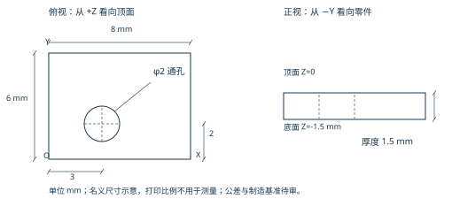

零件与资源是否合适
小试件是否有代表性；真实来料、余量、设备、刀具和装夹是否可用。
将这份 PDF 和 STEP CAD 交给工艺师傅，核对零件、工艺和现场卡片的差异。审阅反馈将决定下一版验证输入。
S1-REVIEW-20261028-r2 · 2026-10-28 · A4 / 6 页
完整包包含可打印工艺卡、制造要求、Domain Gap 与反馈页、STEP / BREP / FreeCAD 原文件、原参数 JSON 和文件哈希清单。

打开尺寸示意 ↗S2–S7 目前只有计划示意，尚无配套 CAD 和卡片；本轮不把它们计入已存档零件。
PDF 第 6 页可直接填写和签字
小试件是否有代表性；真实来料、余量、设备、刀具和装夹是否可用。
补充必要工步、基准、公差、检验方法；转速与进给仍是待审探针值。
保留现场卡片表达，逐项对照字段、单位、深度和基准；明确哪些参数由 CAM 派生。
保留师傅原始工艺卡和字段位置，通过有版本的字段与语义映射转成内部卡；不得要求现场照抄我们的 JSON。未知单位、基准、工序含义和缺项明确提出，不能静默填默认值。
纸质卡识别与通用适配尚待开发。网页不采集签审内容；请保留批注稿，反馈时引用包编号和条目 ID。确认输入适用性与生产放行分别记录。
1 套已存档，6 个阶段待构造
| 阶段 | 案例 | CAD / 工艺卡状态 |
|---|---|---|
| S1 | 偏心通孔薄板 | 已存档，待工艺审阅 |
| S2 | 双孔薄板 | 待构造；仅计划 |
| S3 | 圆角单槽薄板 | 待构造；仅计划 |
| S4 | 型腔＋通孔组合件 | 待构造；仅计划 |
| S5 | 多面钻孔方块 | 待构造；仅计划 |
| S6 | 简单曲面试件 | 待构造；仅计划 |
| S7 | 匹配已支持特征的真实单件 | 待构造；仅计划 |
后续每个阶段先构造并存档 CAD、卡片与资源，再完成相应工艺审阅和验证。旧 R0 与历史制造实验不并入本次送审基线。
每个送审版本保留原字节；反馈记录引用包编号、CAD 哈希和条目 ID。修改时生成下一版及变更说明，重新审阅后再绑定验证结果。
cf9daf28ecd929adb139f7e20bd7ccbbf58c61b95a7425126e322fbfdd7d4366643a38d842d172b1866875c435e738e220f8155a57d23099c98e5d8aa195e4cb